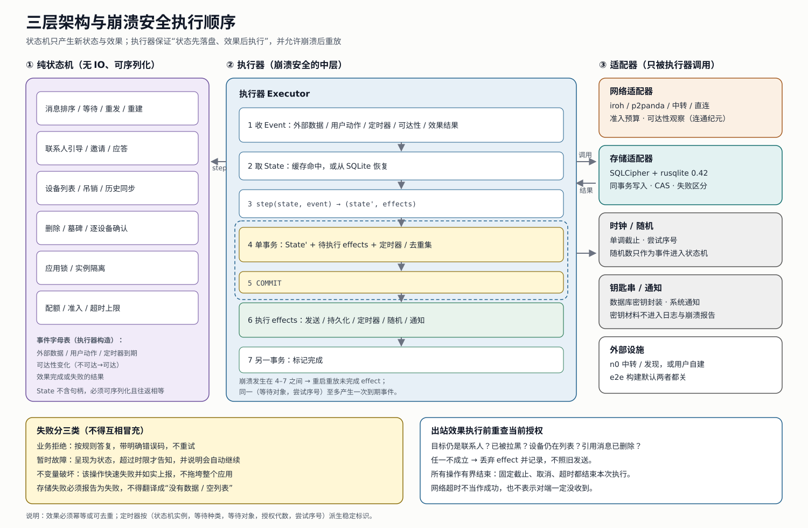
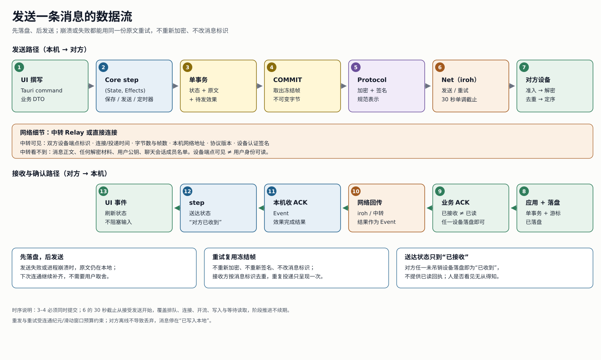
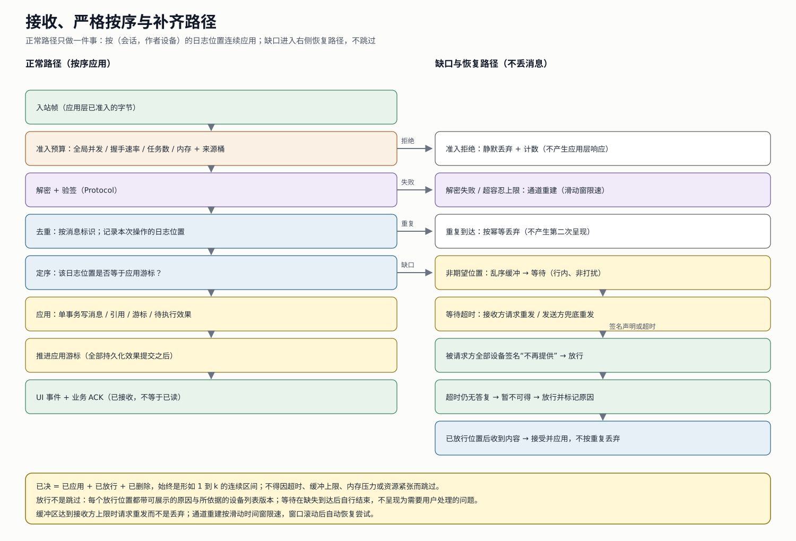
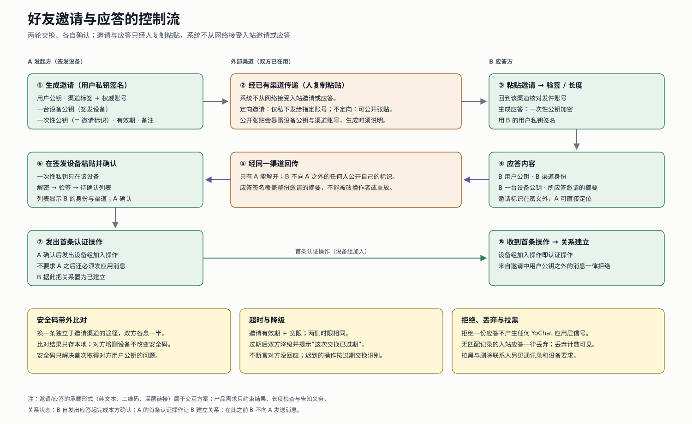

图 01
YoChat 模块概念图
五个 Rust crate 与 Svelte UI 的职责和依赖方向。
点击查看大图一个服务端不持有用户数据的端到端加密好友间信使：纯状态机做领域逻辑，执行器负责崩溃安全地落盘与执行效果，iroh 负责点对点传输，SQLCipher 保存本地数据。
点击任意一张在弹窗中查看；← / → 切换，Esc 关闭，双击图片切换原始尺寸。
五个 Rust crate 与 Svelte UI 的职责和依赖方向。
点击查看大图
纯状态机、执行器与适配器的分层，以及状态与效果同事务、提交后执行、再标记完成的顺序。
点击查看大图
从界面撰写到核心状态推进、同事务落盘、加密发送、对方接收与确认的完整路径。
点击查看大图
入站数据经过准入、解密、去重与定序；缺口进入等待，并通过请求重发、兜底重发、通道重建或可验证声明放行。
点击查看大图
A 生成邀请，经外部渠道传给 B；B 生成加密应答回传；A 在签发设备确认并发出首条认证操作；双方再做安全码带外比对。
点击查看大图
用户私钥只存在于指定设备；设备列表由用户私钥签名并分发；吊销声明只影响设备公钥，不影响用户身份与安全码。
点击查看大图Markdown 在弹窗中渲染；点击正文里的 .md / .svg 链接也会在弹窗中打开。
阅读版整理，源文件是项目内的 docs/glossary.md 与 docs/engineering/*，并按主题补充了架构与验证术语。每条给出中文名、英文名和一句话解释；最后一节专门列出最容易混淆的几组词。
158 行 · 点击阅读这是对 YoChat-20261120 项目的外部阅读整理，不属于项目源码，也不修改项目。目的是先建立整体理解，再进入具体需求与实现。
73 行 · 点击阅读